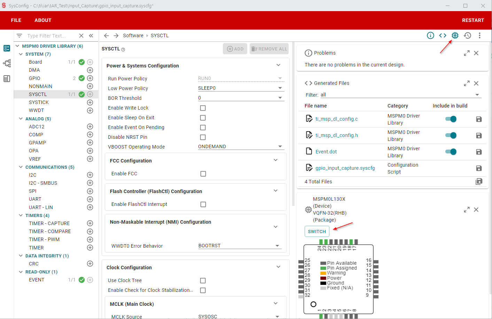
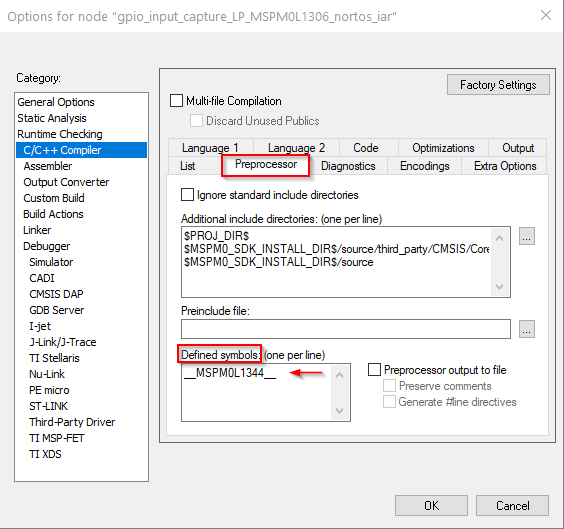
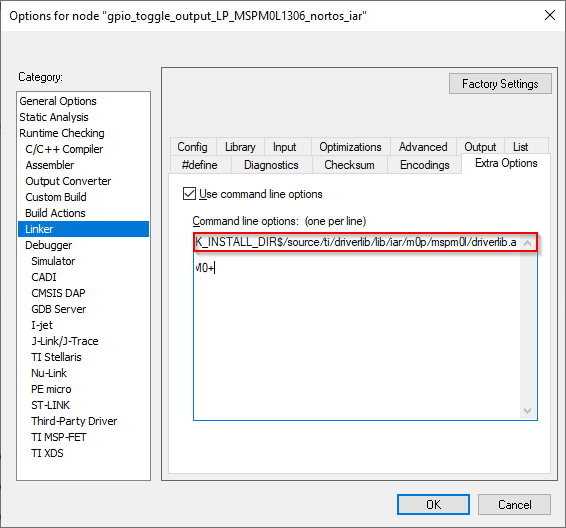
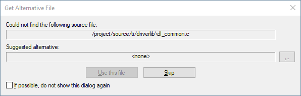

This guide describes only the setup and basic operation of the software development environment, but it does not fully describe the MSPM0 microcontrollers or the complete development software and hardware systems. For details of these items, see the appropriate TI and IAR documents listed in section Related Documentation From Texas Instruments.
These tools contain the most up-to-date materials available at the time of packaging. For the latest materials (including data sheets, user’s guides, software, and application information), visit the TI MSPM0 website or contact your local TI sales office.
Caution - This is an example of a caution statement. A caution statement describes a situation that could potentially damage your software or equipment.
The E2E Community Support Forums for MSPM0 MCUs are available to provide open interaction with peer engineers, TI engineers, and other experts. Additional device-specific information can be found on the MSPM0 website.
IAR Embedded Workbench for Arm (EWARM) IDE is available from the IAR website or the TI IAR kickstart page. MSPM0 microcontrollers and the MSPM0 SDK require EWARM 9.50.2 or higher.
See the MSPM0 SDK documentation for finding the right SDK for your IDE version.
Applications are developed in assembler or C using the Workbench, and they are debugged using C-SPY. C-SPY is seamlessly integrated into the Workbench. However, it is more convenient to make the distinction between the code development environment (Workbench) and the debugger (C-SPY). C-SPY can be configured to operate with a programmer tool such as XDS-110 connected to an MSPM0 device, or with a software simulator of the device. IAR EWARM refers to the Workbench and C-SPY collectively.
Documentation for IAR EWARM is extensive, but the components of IAR EWARM (IDE, debugger, assembler, compiler, linker) are fully documented in <InstallationRoot>\EmbeddedWorkbenchx.x\common\doc and <InstallationRoot>\EmbeddedWorkbench\arm\doc.
The PDF files located throughout the EWARM directory tree contain the most up-to-date information. In addition, EWARM documentation is available online through the Help tab in the IDE.
Please refer to the MSPM0 SDK QuickStart Guide for IAR which contains instructions on how to install the MSPM0 SDK and importing and building an SDK example in IAR.
Note: Creating a project from scratch is not recommended since creating the project from scratch doesn’t add all of the necessary device support files by default. To start from a blank project, TI recommends importing the Empty Driverlib example project from the SDK.
Some examples in the MSPM0 SDK have SysConfig support. SysConfig is an intuitive and comprehensive collection of graphical utilities for configuring pins, peripherals, radios, subsystems, and other components. SysConfig helps you manage, expose, and resolve conflicts visually so that you have more time to create differentiated applications.
The SysConfig tool is delivered as a standalone installer which can be manually integrated into IAR, or can be used via the dev.ti.com cloud tools portal.
The best way to start a SysConfig project in IAR is to import it from the SDK; however, some steps are required to initialize SysConfig in IAR for the first time. Refer to the MSPM0 SDK QuickStart Guide for IAR for more details on installing SysConfig and enabling it for IAR.
SysConfig allows for an easier migration between MSPM0 derivatives; however some manual modifications are required.
In SysConfig, enable the Device View and click on SWITCH

Select the corresponding options for the new MSPM0 device and click CONFIRM.
Note that SysConfig will highlight any conflicts with the migration, such as unavailable pins and peripherals. Fix any conflicts as needed.
In the project options, select General Options → Target → Device. Select the MSPM0 device.
In the project options, select C/C++ Compiler → Preprocessor → Defined symbols. Add the device definition as per the device selected.

Update the linker and startup files. The MSPM0 SDK includes default files for all MSPM0 derivatives at <sdk>\source\ti\devices\msp\m0p\linker_files\iar and <sdk>\source\ti\devices\msp\m0p\startup_system_files\iar respectively.
Resolve any other dependencies such as incompatible libraries and source code.
Note: Steps 1-3 don’t apply when not using SysConfig.
The reserved stack and heap size can be configured through direct modification of the .icf linker configuration files. These files are input to the linker and contain statements that control the allocation of device memory (RAM, flash). See the IAR Development Guide documentation for a complete description of these files.
The supplied .icf files can be modified to tune the size of the stack and heap to the needs of the application; edit __ICFEDIT_size_cstack__=xx or __ICFEDIT_size_heap__=xx to allocate xx bytes for the stack or heap.
2.7 How to Generate TI .TXT (and Other Format) Files¶
The linker can be configured to output objects in TI .TXT format for use with programming tools such as MSP-GANG and UniFlash.
Click Project → Options → Output Converter → Generate additional output → Output format → Texas Instruments TI-TXT. Intel Hex or other formats also can be selected.
Caution: Extreme care should be taken when erasing and programming NONMAIN. If done incorrectly, the device will become locked in a permanently unrecoverable state.
Projects might include pre-built libraries which simplify development and build time; however, they don’t allow developers to modify source code easily.
An example of such libraries is the MSPM0 DriverLib which is shown below.

One option to override the library is to simply add any or all source files to the project. The MSPM0 SDK includes the empty_driverlib_src example which includes all DriverLib source by default:
TI offers a range of debug probes for Arm-based devices, including the XDS-110 which is integrated with MSPM0 LaunchPads.
Note: TI XDS-110 debug probes are enabled for use through the CMSIS-DAP protocol. However, the TI XDS native drivers currently give higher performance.
To use them with EWARM, installation of the XDS emulation package is required. A copy of the emulation package is located in the EWARM installation under \arm\drivers\ti-xds. See the Readme.txt document that is also located in this folder. TI recommends installing the emulation package in c:\ti\xds\ewarm_version. Do not use XDS emulation packages from other EWARM versions, as they might not be compatible and can result in errors when debugging.
To use the TI-XDS debug probes,select Options → Debugger → Driver → TI XDS:
When the emulation package has been installed, XDS debug probes can be selected in Options → Debugger → TI XDS:
Note the selected Emulator. The LaunchPads include an integrated TI XDS110 Emulator.
The selected Interface is SWD which is supported by MSPM0.
Note the TI EmuPack installation path. Override if desired.
The XDS tools use a Flash Loader to download code to the device. Confirm usage in Options → Debugger → Use flash loader(s):
The C-SPY breakpoint mechanism uses a limited number of on-chip debugging resources (specifically 4 hardware breakpoints and 2 hardware watchpoints). Software breakpoints are not supported on MSPM0. This means that a maximum of 4 breakpoints can be set within C-SPY.
Resetting a program and the Run To Cursor operation temporarily require a breakpoint. As a result, only 3 breakpoints can be active. If 4 breakpoints are being used, C-SPY will automatically disable a breakpoint.
If the max number of breakpoints are set, the following warning will be displayed.
Projects might include pre-built libraries which can be difficult to debug if symbols are not available. An example of such libraries is the MSPM0 DriverLib which is used by many MSPM0 SDK examples.
In such scenarios, IAR will show the following message:

The error can be fixed by selecting the folder with source code. For the example shown, the DriverLib source code is selected:
Alternatively, the path for the source code can be added to Options → Runtime Checking → C/C++ Compiler→Preprocessor. For the example shown, the DriverLib source code path was added: